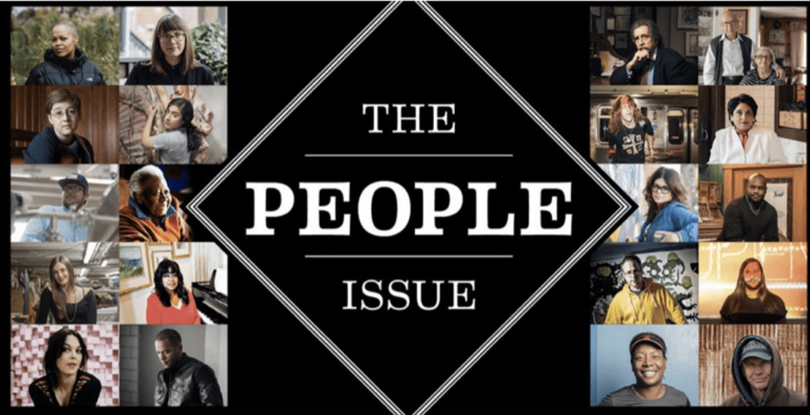

The Chicago Reader’s 2014 People Issue

I'm humbled to be included in the Chicago Reader's 2014 People Issue. Thanks to Drew Hunt for writing such a thoughtful piece and to Jeffrey Marini for making me look presentable on film. This has been a flattering and imposter-syndrome-inducing experience.
People Issue 2014
"The People Issue is about the significance of individuals—particularly 20 Chicagoans whose contributions to the city are in some cases overlooked. But it is also about the ways in which each of these people connects to a bigger community, and how that community can magnify an already potent force."
Gemma Petrie was moved to find ways to make technology more accessible to people traditionally cut off from it—and found that the work brought her closer to those people than technology ever could: “Those interpersonal experiences, both in the local Chicago community and the global community, have been really powerful. It comes down to people.”
You can read my interview here. Be sure to check out the other 19 amazing individuals as well. (Two of my favorites are Gaylon Alcaraz and Chaz Ebert.)

Full article:
Petrie, 33, is making technology more useful, both globally, as a senior user-experience researcher for Mozilla, and locally, as a cofounder of ChiDUXX (Chicago Women of Design and UX), a mentoring and networking group for women in digital user-experience research and related fields.
Interview by Drew Hunt
Photos by Jeffrey Marini
I studied philosophy at Reed College in Oregon, and I decided that I was interested in law school. I started working at a law firm and decided within a year that I didn’t really like that, so I ended up quitting and traveling for six months. When I came back, I didn’t really know what I wanted to do, so I started working with some nonprofits around Chicago. I started working at a settlement house. It was a neighborhood group, and we worked on early childhood education. We created nontraditional spaces for people to learn technology skills. I didn’t have a technology lens on anything at that point; I was trying to feel out what I wanted to do with my life. But the time I spent exposed to these technology programs opened my eyes. We worked primarily with low-income immigrant populations, and I saw the truly huge divide between people like me, who have a ton of advantages and exposure to technology, and people who are fundamentally cut off from those resources—and what not having that access or that literacy means. I decided to focus full-time on technology education and learning.
I take a participatory approach to my job. Say you have a small group of affluent people living someplace like Silicon Valley, creating products that are meant to have a national or even global appeal. You can create a product that’s amazing, but sometimes it ignores the fact that there are wild differences between Silicon Valley and other places in the world. It’s impossible to design something for everyone, so understanding that product—or service or experience—and actually working with the population that you hope to serve is the best way to go about it.
This, of course, implies that there are resources for such a thing, and that’s extremely uncommon, especially for small organizations. It’s a huge cost and a huge amount of time, and there are a lot of limitations.
I have the luxury of occasionally working on funded international projects. Mozilla sends research teams across the world to not only learn about current behavior but also emerging trends and needs in these areas. A lot of people are working to be ahead of the curve to make sure we’re adequately developing technology for a broad audience. The idea is to allow the research to inform that development.
Chicago isn’t considered much of a “tech center.” You think of San Francisco, New York—those are the obvious places where one might go if one is interested in tech. But there’s been a shift in the last few years. The Chicago community feels different. There’s a luxury to living in the midwest. It’s a little nicer, people underestimate it, and people have a genuine desire to see others succeed.
I co-organize two groups here, the Chicago UX Book Club and ChiDUXX. With the book club, people recommend industry-related books to read, and then the whole group votes and we pick the book based on that. It’s been a couple years now, and I’ve met some amazing people.
I had met a number of really awesome women through the book club, and then there was this conference a couple years ago in Chicago that had eight presenters who were all men. They were really smart people, but I was surprised there weren’t any women, because I happen to know a lot of women who are at the top of their field. I ended up meeting my ChiDUXX co-organizer, Golli Hashemian, around this time, and she had a similar reaction. Some of the goals with ChiDUXX are to offer an environment for people to try out talks or share projects, and to mentor one another within the field, but the primary goal is to have more women in user experience get to know each other, so that when there’s a job opening, or somebody is organizing a conference, nobody has to go looking for recommendations.
Things should be changing, and the fact that they aren’t kind of highlights a systemic issue. The more diverse things are, the better they are. The tech industry is filled with young people, and young people are at least characterized as being more open, so that’s part of the frustration. The tech industry isn’t some big investment firm that’s been around a hundred years and this is just how things go. If we can point out the absurdities of these very outmoded ways of thinking, eventually it will all come together to help break down barriers and make people more conscious of the choices they make. I’ve never met a straight-up misogynist in my field, and I hope that remains true. We all have a lot to learn about people who aren’t like ourselves, and ideally we’re all paying attention to how we can do better.
The things I love most about what I do include building communities like ChiDUXX and the book club, and also doing the research, really getting to know what someone else’s life is like in a place that’s very different than mine, and hopefully using that information to create better products. Those interpersonal experiences, both in the local Chicago community and the global community of people who have goals and aspirations that I can help them meet, have been really powerful. It comes down to people.